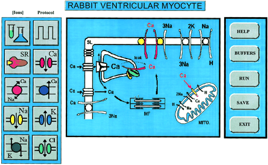

The use of computer models in biology has helped enormously the understanding of complex phenomena such as excitation- contraction coupling in the cardiac cell.

Common plots in electrophysiology such as current-voltage relationship, activation and recovery from inactivation curves are built in features that can be either printed directly or saved as an ASCII file for further analysis or presentation.
Moreover LabHEART is the only program that allows users to create a novel channel. The new equations can be directly typed from the front panel and the user can run them without the need of re-compilation. This program is a stand-alone version that runs on any PC computer without the need of any additional libraries.
Finally for those who are interested on the detailed formulation a Matlab version is also available for download.
©1995-2007 Loyola University Health System. All rights reserved. Disclaimer.